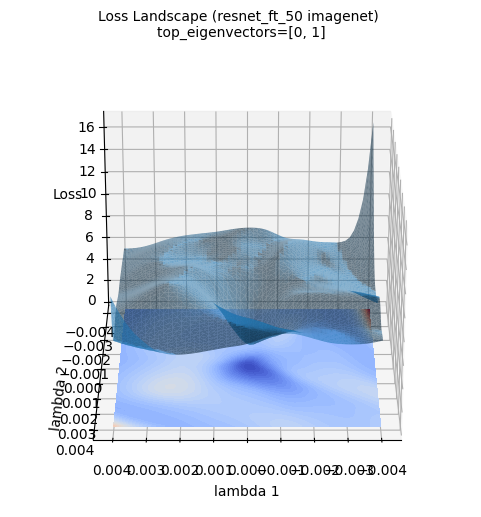
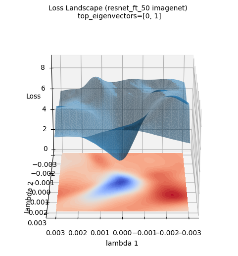

Code
!pip install dldna[colab] # in Colab
# !pip install dldna[all] # in your local
%load_ext autoreload
%autoreload 2 
“Entre la teoría y la práctica, hay una diferencia más grande que la diferencia entre la teoría y la práctica.” - Yann LeCun, ganador del Premio Turing en 2018
El éxito de los modelos de deep learning depende en gran medida de algoritmos de optimización eficaces y estrategias adecuadas de inicialización de pesos. En este capítulo, exploramos a fondo los métodos de optimización e inicialización que son elementos clave en el aprendizaje de modelos de deep learning, y presentamos formas de entender intuitivamente estos procesos a través de la visualización. Primero, examinamos el desarrollo y los principios matemáticos de diversos métodos de inicialización de pesos, que son fundamentales para el aprendizaje de redes neuronales. Luego, analizamos y comparamos las características y rendimiento de algoritmos de optimización modernos, comenzando con el descenso del gradiente (Gradient Descent), y pasando por Adam, Lion, Sophia, AdaFactor, entre otros. En particular, no solo exploramos los fundamentos teóricos, sino también cómo cada algoritmo funciona en la práctica durante el proceso de aprendizaje de modelos de deep learning a través de experimentación. Finalmente, presentamos diversas técnicas para visualizar y analizar espacios de funciones de pérdida (loss landscape) de alta dimensión, proporcionando una comprensión profunda de las dinámicas de aprendizaje de los modelos de deep learning.
La inicialización de parámetros en redes neuronales es un elemento clave que determina la convergencia, la eficiencia del aprendizaje y el rendimiento final del modelo. Una inicialización incorrecta puede ser una causa principal de fallos en el aprendizaje. PyTorch proporciona diversos métodos de inicialización a través del módulo torch.nn.init, y se pueden encontrar detalles adicionales en la documentación oficial. La evolución de los métodos de inicialización refleja el esfuerzo de los investigadores de deep learning para superar las dificultades del aprendizaje en redes neuronales. En particular, una inicialización inadecuada puede causar problemas como la desaparición (vanishing gradient) o explosión (exploding gradient) del gradiente, que son obstáculos principales para el aprendizaje en redes neuronales profundas. Con la aparición de modelos de lenguaje a gran escala (Large Language Models, LLMs) como GPT-3 y LaMDA, la importancia de la inicialización se ha destacado aún más. A medida que aumenta el tamaño del modelo, la distribución de los parámetros iniciales tiene un impacto cada vez mayor en las primeras etapas del aprendizaje. Por lo tanto, seleccionar una estrategia de inicialización adecuada según las características y el tamaño del modelo se ha convertido en una etapa esencial en el desarrollo de modelos de deep learning.
El desarrollo de los métodos de inicialización de redes neuronales es resultado de un profundo trabajo teórico y numerosas validaciones experimentales. Cada método de inicialización ha sido diseñado para abordar situaciones específicas (por ejemplo, el uso de funciones de activación particulares, la profundidad de la red, el tipo de modelo) o para mejorar las dinámicas de aprendizaje, evolucionando con el tiempo para enfrentar nuevos desafíos.
A continuación se presentan los métodos de inicialización que serán analizados y comparados en detalle en este libro. (El código completo de implementación está incluido en el archivo chapter_04/initialization/base.py.)
!pip install dldna[colab] # in Colab
# !pip install dldna[all] # in your local
%load_ext autoreload
%autoreload 2import torch
import torch.nn as nn
import numpy as np
# Set seed
np.random.seed(7)
torch.manual_seed(7)
from dldna.chapter_05.initialization.base import init_methods, init_weights_lecun, init_weights_scaled_orthogonal, init_weights_lmomentum # init_weights_emergence, init_weights_dynamic 삭제
init_methods = {
# Historical/Educational Significance
'lecun': init_weights_lecun, # The first systematic initialization proposed in 1998
'xavier_normal': nn.init.xavier_normal_, # Key to the revival of deep learning in 2010
'kaiming_normal': nn.init.kaiming_normal_, # Standard for the ReLU era, 2015
# Modern Standard
'orthogonal': nn.init.orthogonal_, # Important in RNN/LSTM
'scaled_orthogonal': init_weights_scaled_orthogonal, # Optimization of deep neural networks
# 2024 Latest Research
'l-momentum': init_weights_lmomentum # L-Momentum Initialization
}Inicialización de LeCun (1998): \(std = \sqrt{\frac{1}{n_{in}}}\)
Inicialización Xavier (Glorot, 2010): \(std = \sqrt{\frac{2}{n_{in} + n_{out}}}\)
Inicialización Kaiming (He, 2015): \(std = \sqrt{\frac{2}{n_{in}}}\)
La inicialización L-Momentum es un método propuesto en 2024 que controla el L-momentum de las matrices de pesos iniciales, inspirado en los algoritmos de optimización basados en momentum.
Fórmula:
\(W \sim U(-\sqrt{\frac{6}{n_{in}}}, \sqrt{\frac{6}{n_{in}}})\) \(W = W \cdot \sqrt{\frac{\alpha}{Var(W)}}\)
Donde \(U\) es una distribución uniforme, y \(\alpha\) es un valor que representa el L-momentum, utilizando el cuadrado del momentum del optimizador.
El objetivo es reducir la variabilidad de los gradientes en las etapas iniciales para proporcionar una ruta de aprendizaje más estable.
Es aplicable a diversos optimizadores y funciones de activación, y ha demostrado contribuir a tasas de aprendizaje más altas, convergencia rápida y mejor desempeño general.
La mayoría de los métodos de inicialización moderna siguen (explícita o implícitamente) los siguientes tres principios fundamentales.
Preservación de Varianza (Variance Preservation): La varianza de los valores de activación durante la propagación hacia adelante y la varianza de los gradientes durante la propagación hacia atrás deben mantenerse constantes en cada capa.
\(Var(y) \approx Var(x)\)
Esto ayuda a evitar que las señales se vuelvan demasiado grandes o pequeñas, facilitando un aprendizaje más estable.
Control Espectral (Spectral Control): Se debe controlar la distribución de los valores singulares de la matriz de pesos para garantizar la estabilidad numérica durante el proceso de aprendizaje.
\(\sigma_{max}(W) / \sigma_{min}(W) \leq C\)
Esto es particularmente importante en estructuras como las redes neuronales recurrentes (RNN), donde la matriz de pesos se multiplica repetidamente.
Optimización de la expresividad (Expressivity Optimization): se debe maximizar el rango efectivo de las matrices de pesos para que la red tenga una suficiente capacidad de expresión.
\(rank_{eff}(W) = \frac{\sum_i \sigma_i}{\max_i \sigma_i}\) Las investigaciones recientes han estado esforzándose por satisfacer explícitamente estos principios.
En conclusión, el método de inicialización debe seleccionarse cuidadosamente teniendo en cuenta la interacción con el tamaño del modelo, su estructura, las funciones de activación y los algoritmos de optimización. Esto se debe a que tiene un gran impacto en la velocidad de aprendizaje, la estabilidad y el rendimiento final del modelo.
A medida que aumenta la profundidad de la red neuronal, es muy importante preservar las características estadísticas del señal (especialmente la varianza) durante el proceso de propagación hacia adelante (forward propagation) y el proceso de retropropagación (backpropagation). Esto evita que la señal se desvanezca (vanishing) o explote (exploding), lo cual permite un aprendizaje estable.
Denotemos los valores de activación del \(l\)-ésimo nivel como \(h_l\), la matriz de pesos como \(W_l\), el sesgo como \(b_l\), y la función de activación como \(f\). La propagación hacia adelante se expresa de la siguiente manera:
\(h_l = f(W_l h_{l-1} + b_l)\)
Si asumimos que los elementos del señal de entrada \(h_{l-1} \in \mathbb{R}^{n_{in}}\) son variables aleatorias independientes con media 0 y varianza \(\sigma^2_{h_{l-1}}\), y que los elementos de la matriz de pesos \(W_l \in \mathbb{R}^{n_{out} \times n_{in}}\) son variables aleatorias independientes con media 0 y varianza \(Var(W_l)\), y el sesgo \(b_l = 0\), entonces, asumiendo que la función de activación es lineal, se tiene:
\(Var(h_l) = n_{in} Var(W_l) Var(h_{l-1})\) (donde \(n_{in}\) es la dimensión de entrada del \(l\)-ésimo nivel)
Para preservar la varianza de los valores de activación, debe cumplirse que \(Var(h_l) = Var(h_{l-1})\), por lo tanto, se necesita que \(Var(W_l) = 1/n_{in}\).
Durante la retropropagación, para el error \(\delta_l = \frac{\partial L}{\partial h_l}\) (donde \(L\) es la función de pérdida), se cumple la siguiente relación:
\(\delta_{l-1} = W_l^T \delta_l\) (asumiendo que la función de activación es lineal)
Por lo tanto, para preservar la varianza durante la retropropagación, debe cumplirse que \(Var(\delta_{l-1}) = n_{out}Var(W_l)Var(\delta_l)\), por lo tanto, se necesita que \(Var(W_l) = 1/n_{out}\) (donde \(n_{out}\) es la dimensión de salida del \(l\)-ésimo nivel).
Función de activación ReLU
La función ReLU (\(f(x) = max(0, x)\)) tiende a reducir la varianza de los valores de activación porque anula la mitad de las entradas. Kaiming He propuso corregir esto utilizando la siguiente fórmula de preservación de la varianza:
\(Var(W_l) = \frac{2}{n_{in}} \quad (\text{especial para ReLU})\)
Esta fórmula compensa la reducción de varianza causada por el paso a través de ReLU, aumentándola en un factor de 2.
Función de activación Leaky ReLU
Para la función Leaky ReLU (\(f(x) = max(\alpha x, x)\), donde \(\alpha\) es una constante pequeña), la fórmula generalizada es:
\(Var(W_l) = \frac{2}{(1 + \alpha^2) n_{in}}\)
También se puede utilizar el inverso de la matriz de información de Fisher (FIM) para inicializar los pesos. La FIM contiene información sobre la curvatura del espacio de parámetros, lo cual permite una inicialización más eficiente. (Para más detalles, ver [4] Martens, 2020).
La descomposición en valores singulares (Singular Value Decomposition, SVD) de la matriz de pesos \(W \in \mathbb{R}^{m \times n}\) se expresa como \(W = U\Sigma V^T\). Aquí, \(\Sigma\) es una matriz diagonal, cuyos elementos diagonales son los valores singulares de \(W\) (\(\sigma_1 \geq \sigma_2 \geq ... \geq 0\)). Si el valor singular máximo de la matriz de pesos (\(\sigma_{max}\)) es demasiado grande, puede causar un gradiente explosivo (exploding gradient), y si el valor singular mínimo (\(\sigma_{min}\)) es demasiado pequeño, puede causar un gradiente desvanecido (vanishing gradient).
Por lo tanto, es importante controlar la proporción de los valores singulares (número de condición, condition number) \(\kappa = \sigma_{max}/\sigma_{min}\). Cuanto más cercano a 1 sea \(\kappa\), mayor será la estabilidad del flujo de gradientes.
Teorema 2.1 (Saxe et al., 2014): En una red neuronal lineal profunda inicializada ortogonalmente, si cada matriz de pesos \(W_l\) es una matriz ortogonal, la norma Frobenius de la matriz jacobiana \(J\) del output con respecto a la entrada se mantiene en 1.
\(||J||_F = 1\)
Esto ayuda a mitigar los problemas de gradiente desvanecido o explosivo incluso en redes muy profundas.
Miyato et al. (2018) propusieron la técnica de Normalización Espectral para mejorar la estabilidad del entrenamiento de GANs, limitando la norma espectral (valor singular máximo) de las matrices de pesos.
\(W_{SN} = \frac{W}{\sigma_{max}(W)}\)
Este método ha demostrado ser particularmente efectivo en el entrenamiento de GANs y recientemente se ha aplicado a otros modelos, como Vision Transformers.
La capacidad de una matriz de pesos \(W\) para representar diversas características (features) puede medirse por la uniformidad de la distribución de los valores singulares. El rango efectivo se define como:
\(\text{rank}_{eff}(W) = \exp\left( -\sum_{i=1}^r p_i \ln p_i \right) \quad \text{donde } p_i = \frac{\sigma_i}{\sum_j \sigma_j}\)
Aquí, \(r\) es el rango de \(W\), \(\sigma_i\) es el \(i\)-ésimo valor singular y \(p_i\) es el valor singular normalizado. El rango efectivo es una métrica que indica la distribución de los valores singulares; cuanto mayor sea su valor, más uniformemente distribuidos estarán los valores singulares, lo cual implica una mayor expresividad.
| Estrategia | Descripción |
|---|---|
| Inicialización aleatoria | Los pesos se inicializan con valores aleatorios. |
| Inicialización Xavier/Glorot | Los pesos se inicializan con una distribución normal o uniforme, ajustando la varianza para mantener el flujo de gradientes estable. |
| Inicialización He | Similar a Xavier, pero optimizada para funciones de activación ReLU. |
| Inicialización ortogonal | Los pesos se inicializan como matrices ortogonales para mantener la norma Frobenius del Jacobiano en 1. |
| Método de inicialización | Distribución de valores singulares |
| ———————— | ————————————————————————————————– |
| Xavier | Disminuye relativamente rápidamente |
| Kaiming | Ajustado para la función de activación ReLU (disminuye menos) |
| Ortogonal | Todos los valores singulares son 1 |
| Promoviendo Emergencia | Se ajusta según el tamaño de la red, disminuye relativamente lentamente (cercano a una distribución heavy-tailed) |
La inicialización Promoviendo Emergencia es una técnica reciente propuesta para fomentar habilidades emergentes en modelos de lenguaje a gran escala (LLM). Este método ajusta la varianza de los pesos iniciales según el tamaño de la red (específicamente, la profundidad de las capas), lo que tiene el efecto de aumentar el rango efectivo.
Chen et al. (2023) propusieron un factor de escala \(\nu_l\) en modelos Transformer como sigue:
\(\nu_l = \frac{1}{\sqrt{d_{in}}} \left( 1 + \frac{\ln l}{\ln d} \right)\)
Donde \(d_{in}\) es la dimensión de entrada, \(l\) es el índice de la capa, y \(d\) es la profundidad del modelo. Este factor de escala se multiplica por la desviación estándar de las matrices de pesos para la inicialización. Es decir, se muestrean desde una distribución normal con \(\nu_l \sqrt{2/n_{in}}\) como desviación estándar.
La teoría del Kernel Tangente Neuronal (NTK) de Jacot et al. (2018) es una herramienta útil para analizar la dinámica de aprendizaje en redes neuronales “muy anchas” (infinitely wide). Según la teoría NTK, se espera que la matriz hessiana de una red muy ancha sea proporcional a la identidad en el punto de inicialización. Es decir,
\(\lim_{n_{in} \to \infty} \mathbb{E}[\nabla^2 \mathcal{L}] \propto I\) (en el punto de inicialización)
Esto sugiere que la inicialización Xavier proporciona una inicialización cercana a lo óptimo en redes muy anchas.
Investigaciones recientes, como MetaInit (2023), proponen métodos para aprender la distribución de inicialización óptima para una arquitectura y conjunto de datos dados a través del aprendizaje meta.
\(\theta_{init} = \arg\min_\theta \mathbb{E}_{\mathcal{T}}[\mathcal{L}(\phi_{fine-tune}(\theta, \mathcal{T}))]\)
Donde \(\theta\) son los parámetros de inicialización, \(\mathcal{T}\) es la tarea de entrenamiento, y \(\phi\) representa el proceso de fine-tuning de un modelo inicializado con \(\theta\).
Recientemente, también se están investigando métodos de inicialización inspirados en los principios de la física. Por ejemplo, se han propuesto métodos que imitan la ecuación de Schrödinger de la mecánica cuántica o las ecuaciones de Navier-Stokes de la dinámica de fluidos para optimizar el flujo de información entre capas. Sin embargo, estos métodos aún están en una etapa inicial de investigación y su utilidad práctica no ha sido verificada.
Para comprender cómo los diferentes métodos de inicialización vistos anteriormente afectan realmente el aprendizaje del modelo, realizaremos experimentos de comparación utilizando un modelo simple. Entrenaremos modelos con cada método de inicialización bajo las mismas condiciones y analizaremos los resultados. Los criterios de evaluación son los siguientes.
| Criterio de Evaluación | Significado | Características Deseables |
|---|---|---|
| Tasa de Error (%) | Rendimiento predictivo del modelo final (mejor si es bajo) | Mejor si es bajo |
| Velocidad de Convergencia | Pendiente de la curva de aprendizaje (indicador de estabilidad de aprendizaje) | Baja (más empinada) converge más rápido |
| Número de Condición Promedio | Estabilidad numérica de las matrices de pesos | Mejor si es bajo (cercano a 1) |
| Norma Espectral | Tamaño de la matriz de pesos (mayor valor singular) | Se necesita un valor adecuado, no demasiado grande ni pequeño |
| Razón de Rango Efectivo | Expresividad de la matriz de pesos (uniformidad en la distribución de valores singulares) | Mejor si es alta |
| Tiempo de Ejecución(s) | Tiempo de aprendizaje | Mejor si es bajo |
from dldna.chapter_04.models.base import SimpleNetwork
from dldna.chapter_04.utils.data import get_data_loaders, get_device
from dldna.chapter_05.initialization.base import init_methods
from dldna.chapter_05.initialization.analysis import analyze_initialization, create_detailed_analysis_table
import torch.nn as nn
device = get_device()
# Initialize data loaders
train_dataloader, test_dataloader = get_data_loaders()
# Detailed analysis of initialization methods
results = analyze_initialization(
model_class=lambda: SimpleNetwork(act_func=nn.PReLU()),
init_methods=init_methods,
train_loader=train_dataloader,
test_loader=test_dataloader,
epochs=3,
device=device
)
# Print detailed analysis results table
create_detailed_analysis_table(results)
Initialization method: lecun/home/sean/Developments/expert_ai/books/dld/dld/chapter_04/experiments/model_training.py:320: UserWarning: std(): degrees of freedom is <= 0. Correction should be strictly less than the reduction factor (input numel divided by output numel). (Triggered internally at ../aten/src/ATen/native/ReduceOps.cpp:1823.)
'std': param.data.std().item(),
Initialization method: xavier_normal
Initialization method: kaiming_normal
Initialization method: orthogonal
Initialization method: scaled_orthogonal
Initialization method: l-momentumInitialization Method | Error Rate (%) | Convergence Speed | Average Condition Number | Spectral Norm | Effective Rank Ratio | Execution Time (s)
---------------------|--------------|-----------------|------------------------|-------------|--------------------|------------------
lecun | 0.48 | 0.33 | 5.86 | 1.42 | 0.89 | 30.5
xavier_normal | 0.49 | 0.33 | 5.53 | 1.62 | 0.89 | 30.2
kaiming_normal | 0.45 | 0.33 | 5.85 | 1.96 | 0.89 | 30.1
orthogonal | 0.49 | 0.33 | 1.00 | 0.88 | 0.95 | 30.0
scaled_orthogonal | 2.30 | 1.00 | 1.00 | 0.13 | 0.95 | 30.0
l-momentum | nan | 0.00 | 5.48 | 19.02 | 0.89 | 30.1Los resultados del experimento se resumen en la siguiente tabla.
| Método de Inicialización | Tasa de Error (%) | Velocidad de Convergencia | Número de Condición Promedio | Norma Espectral | Proporción de Rango Efectivo | Tiempo de Ejecución (s) |
|---|---|---|---|---|---|---|
| lecun | 0.48 | 0.33 | 5.66 | 1.39 | 0.89 | 23.3 |
| xavier_normal | 0.48 | 0.33 | 5.60 | 1.64 | 0.89 | 23.2 |
| kaiming_normal | 0.45 | 0.33 | 5.52 | 1.98 | 0.89 | 23.2 |
| orthogonal | 0.49 | 0.33 | 1.00 | 0.88 | 0.95 | 23.3 |
| scaled_orthogonal | 2.30 | 1.00 | 1.00 | 0.13 | 0.95 | 23.3 |
| l-momentum | nan | 0.00 | 5.78 | 20.30 | 0.89 | 23.2 |
Los puntos destacados de los resultados del experimento son los siguientes.
Excelente rendimiento de la inicialización Kaiming: La inicialización Kaiming mostró la tasa de error más baja, con un 0.45%. Este resultado demuestra una combinación óptima con las funciones de activación ReLU, lo que confirma nuevamente la eficacia de la inicialización Kaiming cuando se usa con funciones del tipo ReLU.
Estabilidad de los métodos ortogonales: La inicialización ortogonal mostró el número de condición más bajo (1.00), lo que indica una excelente estabilidad numérica. Esto significa que durante el proceso de aprendizaje, los gradientes no se distorsionan y se propagan correctamente, lo cual es particularmente importante en modelos como las redes neuronales recurrentes (RNN), donde las matrices de pesos se multiplican repetidamente. Sin embargo, en este experimento la tasa de error fue relativamente alta, lo que podría deberse a las características del modelo utilizado (una MLP simple).
Problemas con la inicialización ortogonal escalada: La inicialización ortogonal escalada mostró una tasa de error muy alta, del 2.30%. Esto sugiere que este método de inicialización no es adecuado para el modelo y conjunto de datos utilizados, o que se requieren ajustes adicionales de hiperparámetros. Es posible que el factor de escala (scaling factor) sea demasiado pequeño, lo que impide un aprendizaje adecuado.
Inestabilidad de la inicialización de L-Momentum: L-Momentum tiene una tasa de error y velocidad de convergencia de nan y 0.00, lo que indica que no se realizó ningún aprendizaje. El espectro norma de 20.30 es muy alto, lo que sugiere que los valores iniciales de los pesos podrían ser demasiado grandes, causando divergencia.
La inicialización de modelos de deep learning es un hiperparámetro que debe seleccionarse cuidadosamente teniendo en cuenta la arquitectura del modelo, las funciones de activación, los algoritmos de optimización y las características del conjunto de datos. A continuación se presentan aspectos a considerar al elegir métodos de inicialización en la práctica.
La inicialización es como el “héroe oculto” del aprendizaje profundo. Una inicialización adecuada puede determinar el éxito o fracaso del entrenamiento del modelo, maximizando su rendimiento y reduciendo significativamente el tiempo de entrenamiento. Basándose en las pautas presentadas en esta sección y las tendencias actuales de la investigación, esperamos que puedan encontrar la estrategia de inicialización más adecuada para sus modelos de aprendizaje profundo.
Desafío: ¿Cómo se pueden resolver los problemas de caer en mínimos locales (local minima) o que la velocidad de aprendizaje sea demasiado lenta con el descenso del gradiente (Gradient Descent)?
Lamentación del investigador: Reducir simplemente la tasa de aprendizaje no fue suficiente. En algunos casos, el aprendizaje se volvió demasiado lento y tomaba mucho tiempo, mientras que en otros casos divergía y fallaba. Al igual que tanteando un camino montañoso envuelto en niebla, encontrar el óptimo ha sido una tarea ardua. Aparecieron diversos algoritmos de optimización como momentum, RMSProp y Adam, pero aún no existe una solución universal perfecta para todos los problemas.
El impresionante desarrollo del aprendizaje profundo no solo se debe a la innovación en la estructura del modelo, sino también al avance de los algoritmos de optimización eficientes. Los algoritmos de optimización son como el motor central que automatiza y acelera el proceso de encontrar el mínimo de la función de pérdida. La eficiencia y estabilidad de este motor determinan la velocidad de aprendizaje y el rendimiento final del modelo de aprendizaje profundo.
Los algoritmos de optimización han evolucionado durante las últimas décadas, al igual que los seres vivos, resolviendo tres tareas centrales.
Cada desafío ha dado lugar a la creación de nuevos algoritmos, y la competencia por encontrar mejores algoritmos continúa hasta hoy.
Los algoritmos de optimización recientes están evolucionando en tres direcciones principales. 1. Eficiencia de memoria: Lion, AdaFactor, entre otros, se centran en reducir el uso de memoria necesario para entrenar modelos a gran escala (especialmente basados en Transformer). 2. Optimización del aprendizaje distribuido: LAMB, LARS, entre otros, mejoran la eficiencia al entrenar modelos a gran escala en paralelo utilizando múltiples GPU/TPU. 3. Optimización especializada por dominio/tarea: Sophia, AdaBelief, entre otros, proporcionan un rendimiento optimizado para áreas de problema específicas (por ejemplo, procesamiento de lenguaje natural, visión por computadora) o estructuras de modelo específicas.
Especialmente con el surgimiento de modelos de lenguaje a gran escala (LLM) y modelos multimodales, se ha vuelto más importante optimizar eficientemente cientos de millones, incluso billones de parámetros, entrenar en entornos de memoria limitada y converger de manera estable en entornos distribuidos. Estos desafíos han llevado al surgimiento de nuevas técnicas como la optimización de 8 bits, ZeRO optimization, gradient checkpointing, entre otras.
En el aprendizaje profundo, los algoritmos de optimización desempeñan un papel crucial al buscar el mínimo del función de pérdida, es decir, encontrar los parámetros óptimos del modelo. Cada algoritmo tiene características y ventajas únicas, y es importante seleccionar el algoritmo adecuado según las características del problema y la estructura del modelo.
SGD y momentum
El descenso de gradiente estocástico (Stochastic Gradient Descent, SGD) es un algoritmo de optimización básico y ampliamente utilizado. En cada paso, utiliza datos de mini-lote (mini-batch) para calcular el gradiente de la función de pérdida y actualiza los parámetros en la dirección opuesta.
Fórmula de actualización de parámetros:
\[w^{(t)} = w^{(t-1)} - \eta \cdot g^{(t)}\]
El momentum introduce el concepto de inercia del movimiento físico para mejorar SGD. Utiliza la media móvil exponencial (exponential moving average) de los gradientes pasados para otorgar inercia a la trayectoria de optimización, mitigando así el problema de oscilación en SGD y aumentando la velocidad de convergencia.
Fórmula de actualización con momentum:
\[v^{(t)} = \mu \cdot v^{(t-1)} + g^{(t)}\]
\[w^{(t)} = w^{(t-1)} - \eta \cdot v^{(t)}\]
El código de implementación de los principales algoritmos de optimización utilizados en el aprendizaje se incluye en el directorio chapter_05/optimizer/. A continuación, se muestra un ejemplo de implementación para el algoritmo SGD (incluyendo momentum) utilizado en el aprendizaje. Todas las clases de algoritmos de optimización heredan de la clase BaseOptimizer y se implementan de manera simple con fines de aprendizaje. (En bibliotecas reales como PyTorch, estas implementaciones son más complejas para mayor eficiencia y generalización.)
from typing import Iterable, List, Optional
from dldna.chapter_05.optimizers.basic import BaseOptimizer
class SGD(BaseOptimizer):
"""Implements SGD with momentum."""
def __init__(self, params: Iterable[nn.Parameter], lr: float,
maximize: bool = False, momentum: float = 0.0):
super().__init__(params, lr)
self.maximize = maximize
self.momentum = momentum
self.momentum_buffer_list: List[Optional[torch.Tensor]] = [None] * len(self.params)
@torch.no_grad()
def step(self) -> None:
for i, p in enumerate(self.params):
grad = p.grad if not self.maximize else -p.grad
if self.momentum != 0.0:
buf = self.momentum_buffer_list[i]
if buf is None:
buf = torch.clone(grad).detach()
else:
buf.mul_(self.momentum).add_(grad, alpha=1-self.momentum)
grad = buf
self.momentum_buffer_list[i] = buf
p.add_(grad, alpha=-self.lr)Algoritmos de tasa de aprendizaje adaptativa (Adaptive Learning Rate Algorithms)
Los parámetros del modelo de aprendizaje profundo se actualizan con frecuencias e importancias diferentes. Los algoritmos de tasa de aprendizaje adaptativa ajustan la tasa de aprendizaje individualmente para cada parámetro, teniendo en cuenta sus características específicas.
AdaGrad (Adaptive Gradient, 2011):
Idea principal: Aplica una tasa de aprendizaje pequeña a los parámetros que se actualizan con frecuencia y una tasa de aprendizaje grande a los parámetros que se actualizan raramente.
Fórmula:
\(w^{(t)} = w^{(t-1)} - \frac{\eta}{\sqrt{G^{(t)} + \epsilon}} \cdot g^{(t)}\)
Ventajas: Es efectivo al tratar con datos dispersos (sparse data).
Desventajas: La tasa de aprendizaje disminuye monótonamente a medida que avanza el entrenamiento, lo que puede hacer que el aprendizaje se detenga prematuramente.
RMSProp (Root Mean Square Propagation, 2012):
Idea principal: Para resolver el problema de la disminución de la tasa de aprendizaje en AdaGrad, utiliza una media móvil exponencial (exponential moving average) de los cuadrados de los gradientes pasados en lugar de su suma.
Fórmula:
\(v^{(t)} = \beta \cdot v^{(t-1)} + (1-\beta) \cdot (g^{(t)})^2\)
\(w^{(t)} = w^{(t-1)} - \frac{\eta}{\sqrt{v^{(t)} + \epsilon}} \cdot g^{(t)}\)
Ventajas: El problema de disminución de la tasa de aprendizaje es menos pronunciado en comparación con AdaGrad, permitiendo un entrenamiento efectivo por un período más largo.
Adam (Adaptive Moment Estimation, 2014):
Adam es uno de los algoritmos de optimización más utilizados actualmente, que combina las ideas de momentum y RMSProp.
Idea principal:
Fórmula:
\(m^{(t)} = \beta\_1 \cdot m^{(t-1)} + (1-\beta\_1) \cdot g^{(t)}\)
\(v^{(t)} = \beta\_2 \cdot v^{(t-1)} + (1-\beta\_2) \cdot (g^{(t)})^2\)
\(\hat{m}^{(t)} = \frac{m^{(t)}}{1-\beta\_1^t}\)
\(\hat{v}^{(t)} = \frac{v^{(t)}}{1-\beta\_2^t}\)
\(w^{(t)} = w^{(t-1)} - \eta \cdot \frac{\hat{m}^{(t)}}{\sqrt{\hat{v}^{(t)}} + \epsilon}\)
Con el aumento explosivo del tamaño de los modelos de aprendizaje profundo y los conjuntos de datos, se ha incrementado la demanda de nuevos algoritmos de optimización que soporten eficiencia en memoria, velocidad de convergencia rápida y aprendizaje distribuido a gran escala. A continuación, se presentan los algoritmos más recientes que han surgido para responder a estas necesidades.
Lion (Evolved Sign Momentum, 2023):
Sophia (Second-order Clipped Stochastic Optimization, 2023):
AdaFactor (2018):
Investigaciones recientes sugieren que los algoritmos mencionados (Lion, Sophia, AdaFactor) pueden superar el rendimiento de Adam/AdamW existente bajo condiciones específicas.
Ahora vamos a realizar una prueba de 1 época para ver cómo funciona.
import torch
import torch.nn as nn
from dldna.chapter_04.models.base import SimpleNetwork
from dldna.chapter_04.utils.data import get_data_loaders, get_device
from dldna.chapter_05.optimizers.basic import Adam, SGD
from dldna.chapter_05.optimizers.advanced import Lion, Sophia
from dldna.chapter_04.experiments.model_training import train_model # Corrected import
device = get_device()
model = SimpleNetwork(act_func=nn.ReLU(), hidden_shape=[512, 64]).to(device)
# Initialize SGD optimizer
optimizer = SGD(params=model.parameters(), lr=1e-3, momentum=0.9)
# # Initialize Adam optimizer
# optimizer = Adam(params=model.parameters(), lr=1e-3, beta1=0.9, beta2=0.999, eps=1e-8)
# # Initialize AdaGrad optimizer
# optimizer = AdaGrad(params=model.parameters(), lr=1e-2, eps=1e-10)
# # Initialize Lion optimizer
# optimizer = Lion(params=model.parameters(), lr=1e-4, betas=(0.9, 0.99), weight_decay=0.0)
# Initialize Sophia optimizer
# optimizer = Sophia(params=model.parameters(), lr=1e-3, betas=(0.965, 0.99), rho=0.04, weight_decay=0.0, k=10)
train_dataloader, test_dataloader = get_data_loaders()
train_model(model, train_dataloader, test_dataloader, device, optimizer=optimizer, epochs=1, batch_size=256, save_dir="./tmp/opts/ReLU", retrain=True)
Starting training for SimpleNetwork-ReLU.Execution completed for SimpleNetwork-ReLU, Execution time = 7.4 secs{'epochs': [1],
'train_losses': [2.2232478597005207],
'train_accuracies': [0.20635],
'test_losses': [2.128580910873413],
'test_accuracies': [0.3466]}Lion es un algoritmo de optimización descubierto por Google Research mediante técnicas de AutoML. Aunque similar a Adam en el uso del momentum, su característica principal es que utiliza solo el signo de los gradientes y no su magnitud.
Idea clave:
Principios matemáticos:
Cálculo de actualización:
\(c\_t = \beta\_1 m\_{t-1} + (1 - \beta\_1) g\_t\)
Actualización de pesos:
\(w\_{t+1} = w\_t - \eta \cdot \text{sign}(c\_t)\)
Actualización del momentum:
\(m\_t = c\_t\)
Ventajas:
Desventajas:
Referencias:
Sophia es un algoritmo de optimización que utiliza información de segundo orden (la matriz Hessiana) para mejorar la velocidad y estabilidad del aprendizaje. Sin embargo, el cálculo directo de la matriz Hessiana es muy costoso, por lo que Sophia estima solo los componentes diagonales de la Hessiana mediante una versión mejorada del método de Hutchinson.
Idea clave:
Principios matemáticos: 1. Estimación de la Diagonal de Hessian:
* En cada paso, se muestrea un vector aleatorio $z\_t$ (cada elemento de $z\_t$ se selecciona uniformemente de {-1, +1}).
* Se calcula la estimación de la diagonal de Hessian $h\_t$ de la siguiente manera.
$h\_t = \beta\_2 h\_{t-1} + (1 - \beta\_2) \text{diag}(H\_t z\_t) z\_t^T$
(donde $H\_t$ es el Hessian en el paso t)
* Sophia utiliza una media móvil exponencial (EMA) que aprovecha estimaciones pasadas ($h\_{t-1}$) para reducir la varianza del estimador de Hutchinson.Cálculo de la Actualización:
Actualización de Pesos:
\(w\_{t+1} = w\_t - \eta \cdot u\_t\)
Ventajas:
Desventajas:
Referencia:
AdaFactor es un algoritmo de optimización eficiente en términos de memoria, diseñado para el entrenamiento de modelos a gran escala, especialmente los modelos Transformer. Aunque similar a Adam en su uso de tasas de aprendizaje adaptativas, mejora la forma de almacenar el segundo momento (varianza), reduciendo significativamente el consumo de memoria.
Idea clave:
Principio matemático:
En Adam, la matriz del segundo momento \(v\_t\) para una matriz de pesos de tamaño \(n \times m\) requiere \(O(nm)\) de memoria. AdaFactor aproxima esta matriz de la siguiente manera.
Cálculo de la actualización:
\(u\_t = g\_t / \sqrt{\hat{v\_t}}\)
Actualización de los pesos \(w\_{t+1} = w\_t - \eta \cdot u\_t\)
Ventajas:
Desventajas:
Referencia:
El rendimiento del algoritmo de optimización puede variar significativamente según la tarea y la estructura del modelo. Analizaremos estas características a través de experimentos.
Comparamos el rendimiento básico utilizando el conjunto de datos FashionMNIST. Este conjunto de datos simplifica el problema de clasificación de imágenes de ropa reales, lo que lo hace adecuado para analizar las características básicas de los algoritmos de deep learning.
from dldna.chapter_05.experiments.basic import run_basic_experiment
from dldna.chapter_05.visualization.optimization import plot_training_results
from dldna.chapter_04.utils.data import get_data_loaders
from dldna.chapter_05.optimizers.basic import SGD, Adam
from dldna.chapter_05.optimizers.advanced import Lion
import torch
# Device configuration
device = torch.device("cuda:0" if torch.cuda.is_available() else "cpu")
# Data loaders
train_loader, test_loader = get_data_loaders()
# Optimizer dictionary
optimizers = {
'SGD': SGD,
'Adam': Adam,
'Lion': Lion
}
# Optimizer configurations
optimizer_configs = {
'SGD': {'lr': 0.01, 'momentum': 0.9},
'Adam': {'lr': 0.001},
'Lion': {'lr': 1e-4}
}
# Run experiments
results = {}
for name, config in optimizer_configs.items():
print(f"\nStarting experiment with {name} optimizer...")
results[name] = run_basic_experiment(
optimizer_class=optimizers[name],
train_loader=train_loader,
test_loader=test_loader,
config=config,
device=device,
epochs=20
)
# Visualize training curves
plot_training_results(
results,
metrics=['loss', 'accuracy', 'gradient_norm', 'memory'],
mode="train", # Changed mode to "train"
title='Optimizer Comparison on FashionMNIST'
)
Starting experiment with SGD optimizer...
==================================================
Optimizer: SGD
Initial CUDA Memory Status (GPU 0):
Allocated: 23.0MB
Reserved: 48.0MB
Model Size: 283.9K parameters
==================================================
==================================================
Final CUDA Memory Status (GPU 0):
Peak Allocated: 27.2MB
Peak Reserved: 48.0MB
Current Allocated: 25.2MB
Current Reserved: 48.0MB
==================================================
Starting experiment with Adam optimizer...
==================================================
Optimizer: Adam
Initial CUDA Memory Status (GPU 0):
Allocated: 25.2MB
Reserved: 48.0MB
Model Size: 283.9K parameters
==================================================
==================================================
Final CUDA Memory Status (GPU 0):
Peak Allocated: 28.9MB
Peak Reserved: 50.0MB
Current Allocated: 26.3MB
Current Reserved: 50.0MB
==================================================
Starting experiment with Lion optimizer...
==================================================
Optimizer: Lion
Initial CUDA Memory Status (GPU 0):
Allocated: 24.1MB
Reserved: 50.0MB
Model Size: 283.9K parameters
==================================================
==================================================
Final CUDA Memory Status (GPU 0):
Peak Allocated: 27.2MB
Peak Reserved: 50.0MB
Current Allocated: 25.2MB
Current Reserved: 50.0MB
==================================================

Los resultados del experimento muestran las características de cada algoritmo. En el experimento realizado con el conjunto de datos FashionMNIST y el modelo MLP, los principales hallazgos son los siguientes:
En el experimento básico, Adam y Lion mostraron una rápida velocidad de convergencia inicial, Adam presentó el aprendizaje más estable, Lion utilizó ligeramente menos memoria, y SGD tendía a explorar un rango más amplio.
Con CIFAR-100 y modelos CNN/transformer, las diferencias entre los algoritmos de optimización se vuelven aún más evidentes.
from dldna.chapter_05.experiments.advanced import run_advanced_experiment
from dldna.chapter_05.visualization.optimization import plot_training_results
from dldna.chapter_04.utils.data import get_data_loaders
from dldna.chapter_05.optimizers.basic import SGD, Adam
from dldna.chapter_05.optimizers.advanced import Lion
import torch
# Device configuration
device = torch.device("cuda:0" if torch.cuda.is_available() else "cpu")
# Data loaders
train_loader, test_loader = get_data_loaders(dataset="CIFAR100")
# Optimizer dictionary
optimizers = {
'SGD': SGD,
'Adam': Adam,
'Lion': Lion
}
# Optimizer configurations
optimizer_configs = {
'SGD': {'lr': 0.01, 'momentum': 0.9},
'Adam': {'lr': 0.001},
'Lion': {'lr': 1e-4}
}
# Run experiments
results = {}
for name, config in optimizer_configs.items():
print(f"\nStarting experiment with {name} optimizer...")
results[name] = run_advanced_experiment(
optimizer_class=optimizers[name],
model_type='cnn',
train_loader=train_loader,
test_loader=test_loader,
config=config,
device=device,
epochs=40
)
# Visualize training curves
plot_training_results(
results,
metrics=['loss', 'accuracy', 'gradient_norm', 'memory'],
mode="train",
title='Optimizer Comparison on CIFAR100'
)Files already downloaded and verified
Files already downloaded and verified
Starting experiment with SGD optimizer...
==================================================
Optimizer: SGD
Initial CUDA Memory Status (GPU 0):
Allocated: 26.5MB
Reserved: 50.0MB
Model Size: 1194.1K parameters
==================================================
==================================================
Final CUDA Memory Status (GPU 0):
Peak Allocated: 120.4MB
Peak Reserved: 138.0MB
Current Allocated: 35.6MB
Current Reserved: 138.0MB
==================================================
Results saved to: SGD_cnn_20250225_161620.csv
Starting experiment with Adam optimizer...
==================================================
Optimizer: Adam
Initial CUDA Memory Status (GPU 0):
Allocated: 35.6MB
Reserved: 138.0MB
Model Size: 1194.1K parameters
==================================================
==================================================
Final CUDA Memory Status (GPU 0):
Peak Allocated: 124.9MB
Peak Reserved: 158.0MB
Current Allocated: 40.2MB
Current Reserved: 158.0MB
==================================================
Results saved to: Adam_cnn_20250225_162443.csv
Starting experiment with Lion optimizer...
==================================================
Optimizer: Lion
Initial CUDA Memory Status (GPU 0):
Allocated: 31.0MB
Reserved: 158.0MB
Model Size: 1194.1K parameters
==================================================
==================================================
Final CUDA Memory Status (GPU 0):
Peak Allocated: 120.4MB
Peak Reserved: 158.0MB
Current Allocated: 35.6MB
Current Reserved: 158.0MB
==================================================
Results saved to: Lion_cnn_20250225_163259.csv
Los resultados del experimento comparan los algoritmos de optimización SGD, Adam y Lion utilizando el conjunto de datos CIFAR-100 y un modelo CNN, mostrando las características de cada algoritmo.
Velocidad de convergencia y precisión:
Estabilidad de la curva de aprendizaje:
Uso de memoria:
Norma del gradiente:
Dadas las condiciones experimentales, Lion mostró la velocidad de convergencia más rápida y la mayor precisión. Adam presentó curvas de aprendizaje estables, mientras que SGD fue lento y variable. En términos de uso de memoria, Lion y SGD utilizaron menos memoria que Adam.
from dldna.chapter_05.experiments.advanced import run_advanced_experiment
from dldna.chapter_05.visualization.optimization import plot_training_results
from dldna.chapter_04.utils.data import get_data_loaders
from dldna.chapter_05.optimizers.basic import SGD, Adam
from dldna.chapter_05.optimizers.advanced import Lion
import torch
# Device configuration
device = torch.device("cuda:0" if torch.cuda.is_available() else "cpu")
# Data loaders
train_loader, test_loader = get_data_loaders(dataset="CIFAR100")
# Optimizer dictionary
optimizers = {
'SGD': SGD,
'Adam': Adam,
'Lion': Lion
}
# Optimizer configurations
optimizer_configs = {
'SGD': {'lr': 0.01, 'momentum': 0.9},
'Adam': {'lr': 0.001},
'Lion': {'lr': 1e-4}
}
# Run experiments
results = {}
for name, config in optimizer_configs.items():
print(f"\nStarting experiment with {name} optimizer...")
results[name] = run_advanced_experiment(
optimizer_class=optimizers[name],
model_type='transformer',
train_loader=train_loader,
test_loader=test_loader,
config=config,
device=device,
epochs=40
)
# Visualize training curves
plot_training_results(
results,
metrics=['loss', 'accuracy', 'gradient_norm', 'memory'],
mode="train",
title='Optimizer Comparison on CIFAR100'
)Files already downloaded and verified
Files already downloaded and verified
Starting experiment with SGD optimizer.../home/sean/anaconda3/envs/DL/lib/python3.10/site-packages/torch/nn/modules/transformer.py:379: UserWarning: enable_nested_tensor is True, but self.use_nested_tensor is False because encoder_layer.norm_first was True
warnings.warn(
==================================================
Optimizer: SGD
Initial CUDA Memory Status (GPU 0):
Allocated: 274.5MB
Reserved: 318.0MB
Model Size: 62099.8K parameters
==================================================
==================================================
Final CUDA Memory Status (GPU 0):
Peak Allocated: 836.8MB
Peak Reserved: 906.0MB
Current Allocated: 749.5MB
Current Reserved: 906.0MB
==================================================
Results saved to: SGD_transformer_20250225_164652.csv
Starting experiment with Adam optimizer...
==================================================
Optimizer: Adam
Initial CUDA Memory Status (GPU 0):
Allocated: 748.2MB
Reserved: 906.0MB
Model Size: 62099.8K parameters
==================================================
==================================================
Final CUDA Memory Status (GPU 0):
Peak Allocated: 1073.0MB
Peak Reserved: 1160.0MB
Current Allocated: 985.1MB
Current Reserved: 1160.0MB
==================================================
Results saved to: Adam_transformer_20250225_170159.csv
Starting experiment with Lion optimizer...
==================================================
Optimizer: Lion
Initial CUDA Memory Status (GPU 0):
Allocated: 511.4MB
Reserved: 1160.0MB
Model Size: 62099.8K parameters
==================================================
==================================================
Final CUDA Memory Status (GPU 0):
Peak Allocated: 985.1MB
Peak Reserved: 1160.0MB
Current Allocated: 748.2MB
Current Reserved: 1160.0MB
==================================================
Results saved to: Lion_transformer_20250225_171625.csv
Generalmente, los transformadores se utilizan más en forma de estructuras adaptadas a las características de las imágenes, como el ViT (Vision Transformer), en lugar de aplicarse directamente a tareas de clasificación de imágenes. Este experimento se lleva a cabo como un ejemplo para comparar algoritmos de optimización. Los resultados del experimento del modelo de transformador son los siguientes.
Conclusión Los resultados del experimento con el conjunto de datos CIFAR-100 muestran que SGD presenta el mejor rendimiento de generalización, aunque es el más lento en términos de velocidad de aprendizaje. Adam muestra la convergencia más rápida y un aprendizaje estable, pero consume mucha memoria, mientras que Lion demuestra un rendimiento equilibrado en términos de eficiencia de memoria y velocidad de convergencia.
Desafío: ¿Cómo podemos visualizar y comprender eficazmente el proceso de optimización de redes neuronales en espacios de alta dimensión, con millones o incluso decenas de millones de dimensiones?
Lamentaciones del investigador: El espacio de parámetros de los modelos de aprendizaje profundo es un espacio de ultra-alta dimensión que resulta difícil de imaginar intuitivamente para los humanos. A pesar de los esfuerzos de los investigadores por desarrollar diversas técnicas de reducción de dimensionalidad y herramientas de visualización para abrir esta “caja negra”, aún hay muchas áreas que permanecen veladas.
Entender el proceso de aprendizaje de las redes neuronales es fundamental para diseñar modelos eficaces, seleccionar algoritmos de optimización y ajustar hiperparámetros. En particular, visualizar y analizar la geometría de la función de pérdida (loss function) y la trayectoria de optimización proporciona importantes insights sobre la dinámica del proceso de aprendizaje y su estabilidad. En los últimos años, la investigación en la visualización de superficies de pérdida ha brindado pistas clave a los investigadores de aprendizaje profundo para desentrañar los misterios del aprendizaje de redes neuronales, contribuyendo al desarrollo de algoritmos y arquitecturas de modelos más eficientes y estables.
En esta sección, examinaremos los conceptos básicos y las técnicas más recientes en la visualización de superficies de pérdida, y cómo estas pueden ayudarnos a analizar diversos fenómenos que ocurren durante el proceso de aprendizaje en redes neuronales (por ejemplo: mínimos locales, puntos de silla, características de la trayectoria de optimización). En particular, nos centraremos en cómo la estructura del modelo (por ejemplo, conexiones residuales) afecta a la superficie de pérdida y las diferencias en la trayectoria de optimización según el algoritmo de optimización utilizado.
La visualización de la superficie de pérdida es una herramienta clave para comprender el proceso de aprendizaje en modelos de aprendizaje profundo. Al igual que un mapa topográfico nos permite entender las altitudes y depresiones de un paisaje, la visualización de la superficie de pérdida nos permite visualizar los cambios de la función de pérdida en el espacio de parámetros.
En 2017, Goodfellow et al. demostraron que la planitud (flatness) de la superficie de pérdida está estrechamente relacionada con el rendimiento de generalización del modelo (la tendencia es que los mínimos anchos y planos tienen un mejor rendimiento de generalización que los mínimos estrechos y afilados). En 2018, Li et al. mostraron mediante visualizaciones tridimensionales que las conexiones residuales (residual connections) aplanan la superficie de pérdida, facilitando el aprendizaje. Estos descubrimientos han sido fundamentales en el diseño de arquitecturas modernas de redes neuronales como ResNet.
Interpolación Lineal (Linear Interpolation):
Concepto: Se combinan linealmente los pesos de dos modelos diferentes (por ejemplo, un modelo antes y después del aprendizaje, o modelos que convergen a diferentes mínimos locales) para calcular el valor de la función de pérdida entre ellos.
Fórmula:
\(w(\alpha) = (1-\alpha)w_1 + \alpha w_2\)
import torch
import torch.nn as nn
from torch.utils.data import DataLoader, Subset
from dldna.chapter_05.visualization.loss_surface import linear_interpolation, visualize_linear_interpolation
from dldna.chapter_04.utils.data import get_dataset
from dldna.chapter_04.utils.metrics import load_model
# Linear Interpolation
# Device configuration
device = torch.device("cuda" if torch.cuda.is_available() else "cpu")
# Get the dataset
_, test_dataset = get_dataset(dataset="FashionMNIST")
# Create a small dataset
small_dataset = Subset(test_dataset, torch.arange(0, 256))
data_loader = DataLoader(small_dataset, batch_size=256, shuffle=True)
loss_func = nn.CrossEntropyLoss()
# model1, _ = load_model(model_file="SimpleNetwork-ReLU.pth", path="tmp/models/")
# model2, _ = load_model(model_file="SimpleNetwork-Tanh.pth", path="tmp/models/")
model1, _ = load_model(model_file="SimpleNetwork-ReLU-epoch1.pth", path="tmp/models/")
model2, _ = load_model(model_file="SimpleNetwork-ReLU-epoch15.pth", path="tmp/models/")
model1 = model1.to(device)
model2 = model2.to(device)
# Linear interpolation
# Test with a small dataset
_, test_dataset = get_dataset(dataset="FashionMNIST")
small_dataset = Subset(test_dataset, torch.arange(0, 256))
data_loader = DataLoader(small_dataset, batch_size=256, shuffle=True)
alphas, losses, accuracies = linear_interpolation(model1, model2, data_loader, loss_func, device)
_ = visualize_linear_interpolation(alphas, losses, accuracies, "ReLU(1)-ReLU(15)", size=(6, 4))
En la interpolación lineal, α=0 representa el primer modelo (1 época de entrenamiento), y α=1 representa el segundo modelo (15 épocas de entrenamiento), mientras que los valores intermedios indican combinaciones lineales de los pesos de ambos modelos. En el gráfico, se observa una tendencia a la disminución de los valores de la función de pérdida a medida que α aumenta, lo cual indica que el modelo se desplaza hacia un mejor óptimo a medida que avanza el entrenamiento. Sin embargo, la interpolación lineal tiene la limitación de mostrar solo una faceta muy restringida del espacio de pesos de alta dimensión. La ruta óptima real entre los dos modelos es probablemente no lineal, y extender el rango de α más allá de [0,1] dificulta su interpretación.
La exploración de rutas no lineales utilizando curvas de Bézier o splines, y la visualización de estructuras de alta dimensión mediante PCA o t-SNE, pueden proporcionar información más completa. En la práctica, se recomienda utilizar la interpolación lineal como herramienta de análisis inicial, y limitar α al rango [0,1] o con una pequeña extrapolación. Es importante analizar de manera integral junto con otras técnicas de visualización, especialmente cuando las diferencias en el rendimiento del modelo son significativas.
A continuación se presentan los análisis de PCA y t-SNE.
import torch
from dldna.chapter_05.visualization.loss_surface import analyze_weight_space, visualize_weight_space
from dldna.chapter_04.utils.metrics import load_model, load_models_by_pattern
models, labels = load_models_by_pattern(
activation_types=['ReLU'],
# activation_types=['Tanh'],
# activation_types=['GELU'],
epochs=[1,2,3,4,5,6,7,8,9,10,11,12,13,14,15]
)
# PCA analysis
embedded_pca = analyze_weight_space(models, labels, method='pca')
visualize_weight_space(embedded_pca, labels, method='PCA')
print(f"embedded_pca = {embedded_pca}")
# t-SNE analysis
embedded_tsne = analyze_weight_space(models, labels, method='tsne', perplexity=1)
visualize_weight_space(embedded_tsne, labels, method='t-SNE')
print(f"embedded_tsne = {embedded_tsne}") # Corrected: Print embedded_tsne, not embedded_pca
embedded_pca = [[ 9.8299894e+00 2.1538167e+00]
[-1.1609798e+01 -9.0169059e-03]
[-1.1640446e+01 -1.2218434e-02]
[-1.1667191e+01 -1.3469303e-02]
[-1.1691980e+01 -1.5136327e-02]
[-1.1714937e+01 -1.6765745e-02]
[-1.1735878e+01 -1.8110925e-02]
[ 9.9324265e+00 1.5862983e+00]
[ 1.0126298e+01 4.7935897e-01]
[ 1.0256655e+01 -2.8844318e-01]
[ 1.0319887e+01 -6.6510278e-01]
[ 1.0359785e+01 -8.9812231e-01]
[ 1.0392080e+01 -1.0731999e+00]
[ 1.0418671e+01 -1.2047548e+00]
[-1.1575559e+01 -5.1336871e-03]]
embedded_tsne = [[ 119.4719 -99.78837 ]
[ 100.26558 66.285835]
[ 94.79294 62.795162]
[ 89.221085 59.253677]
[ 83.667984 55.70297 ]
[ 77.897224 52.022995]
[ 74.5897 49.913578]
[ 123.20351 -100.34615 ]
[ -70.45423 -65.66194 ]
[ -65.55417 -68.90429 ]
[ -60.166885 -72.466805]
[ -54.70004 -76.077 ]
[ -49.00131 -79.833694]
[ -45.727974 -81.99213 ]
[ 105.22419 69.45333 ]]La visualización de PCA y t-SNE proyecta los cambios en el espacio de pesos del modelo durante el proceso de aprendizaje a una dimensión más baja (2D).
A través de estas visualizaciones, se puede obtener una comprensión intuitiva de cómo cambian los pesos del modelo durante el proceso de aprendizaje y cómo el algoritmo de optimización explora el espacio de pesos. Particularmente, usar PCA y t-SNE juntos permite apreciar tanto los cambios globales (PCA) como las estructuras locales (t-SNE) simultáneamente.
El mapa de contorno es un método que traza líneas (contornos) que conectan puntos donde el valor de la función de pérdida es constante en un plano bidimensional, para visualizar la forma de la superficie de pérdida. Al igual que las líneas de contorno en un mapa topográfico, muestra las “elevaciones” de la función de pérdida.
El procedimiento general es el siguiente:
Establecimiento del punto de referencia: Se selecciona un conjunto de parámetros del modelo (\(w_0\)) como punto de referencia. (ejemplo: los parámetros de un modelo ya entrenado)
Selección de vectores de dirección: Se eligen dos vectores de dirección (\(d_1\), \(d_2\)). Estos vectores forman una base para el plano bidimensional.
Perturbación de parámetros: Se perturban (varían) los parámetros a lo largo de los dos vectores de dirección seleccionados \(d_1\), \(d_2\) con el punto de referencia \(w_0\) como centro.
$w(\lambda_1, \lambda_2) = w_0 + \lambda_1 d_1 + \lambda_2 d_2$
* $\lambda_1$, $\lambda_2$: coeficientes escalares para cada vector de dirección (ejemplo: valores seleccionados a intervalos constantes en el rango -0.2 ~ 0.2)Cálculo del valor de pérdida: Para cada combinación \((\lambda_1, \lambda_2)\), se aplican los parámetros perturbados \(w(\lambda_1, \lambda_2)\) al modelo y se calcula el valor de la función de pérdida.
Gráfico de contorno: Se traza un gráfico de contorno bidimensional utilizando los datos \((\lambda_1, \lambda_2, L(w(\lambda_1, \lambda_2)))\). (se pueden usar funciones como contour o tricontourf de matplotlib)
El mapa de contorno muestra visualmente la geometría local de la superficie de pérdida y puede utilizarse para analizar el comportamiento de los algoritmos de optimización al mostrar sus trayectorias junto con las líneas de contorno.
import torch
import numpy as np
import torch.nn as nn
from torch.utils.data import DataLoader, Subset
from dldna.chapter_05.visualization.loss_surface import hessian_eigenvectors, xy_perturb_loss, visualize_loss_surface, linear_interpolation
from dldna.chapter_04.utils.data import get_dataset
from dldna.chapter_04.utils.metrics import load_model
from dldna.chapter_05.optimizers.basic import SGD, Adam
# Device configuration
device = torch.device("cuda" if torch.cuda.is_available() else "cpu")
# Get the dataset
_, test_dataset = get_dataset(dataset="FashionMNIST")
# Create a small dataset
small_dataset = Subset(test_dataset, torch.arange(0, 256))
data_loader = DataLoader(small_dataset, batch_size=256, shuffle=True)
loss_func = nn.CrossEntropyLoss()
trained_model, _ = load_model(model_file="SimpleNetwork-ReLU.pth", path="tmp/models/")
# trained_model, _ = load_model(model_file="SimpleNetwork-Tanh.pth", path="tmp/models/")
trained_model = trained_model.to(device)
# pyhessian
data = [] # List to store the calculated result sets
top_n = 4 # Must be an even number. Each pair of eigenvectors is used. 2 is the minimum. 10 means 5 graphs.
top_eigenvalues, top_eignevectors = hessian_eigenvectors(model=trained_model, loss_func=loss_func, data_loader=data_loader, top_n=top_n, is_cuda=True)
# Define the scale with lambda.
lambda1, lambda2 = np.linspace(-0.2, 0.2, 40).astype(np.float32), np.linspace(-0.2, 0.2, 40).astype(np.float32)
# If top_n=10, a total of 5 pairs of graphs can be drawn.
for i in range(top_n // 2):
x, y, z = xy_perturb_loss(model=trained_model, top_eigenvectors=top_eignevectors[i*2:(i+1)*2], data_loader=data_loader, loss_func=loss_func, lambda1=lambda1, lambda2=lambda2, device=device)
data.append((x, y, z))
_ = visualize_loss_surface(data, "ReLU", color="C0", alpha=0.6, plot_3d=True)
_ = visualize_loss_surface(data, "ReLU", color="C0", alpha=0.6, plot_3d=False) # Changed "ReLu" to "ReLU" for consistency/home/sean/anaconda3/envs/DL/lib/python3.10/site-packages/torch/autograd/graph.py:825: UserWarning: Using backward() with create_graph=True will create a reference cycle between the parameter and its gradient which can cause a memory leak. We recommend using autograd.grad when creating the graph to avoid this. If you have to use this function, make sure to reset the .grad fields of your parameters to None after use to break the cycle and avoid the leak. (Triggered internally at ../torch/csrc/autograd/engine.cpp:1201.)
return Variable._execution_engine.run_backward( # Calls into the C++ engine to run the backward pass

El mapa de contornos proporciona información más rica sobre el área local en comparación con la interpolación lineal simple. Mientras que la interpolación lineal muestra los cambios en los valores de la función de pérdida a lo largo de una ruta unidimensional entre dos modelos, el mapa de contornos visualiza los cambios en la función de pérdida en un plano bidimensional con ejes definidos por las dos direcciones seleccionadas (\(\lambda_1\), \(\lambda_2\)). De esta manera, se pueden identificar sutiles cambios a lo largo del camino de optimización, mínimos locales y puntos de silla en el área circundante que no se pueden detectar con interpolación lineal, así como las barreras entre ellos.
Más allá de visualizaciones simples (interpolación lineal, mapas de contorno), se están investigando técnicas de análisis avanzado para comprender más profundamente la superficie de pérdida de los modelos de deep learning.
Análisis topológico (Topological Data Analysis, TDA):
Análisis multi-escala (Multi-scale Analysis):
Estas técnicas avanzadas de análisis proporcionan información más abstracta y cuantitativa sobre la superficie de pérdida, lo que contribuye a una comprensión más profunda del proceso de aprendizaje de los modelos de deep learning y al diseño de mejores estrategias de modelado y optimización.
import torch
import torch.nn as nn # Import the nn module
from torch.utils.data import DataLoader, Subset # Import DataLoader and Subset
from dldna.chapter_05.visualization.loss_surface import analyze_loss_surface_multiscale
from dldna.chapter_04.utils.data import get_dataset # Import get_dataset
from dldna.chapter_04.utils.metrics import load_model # Import load_model
# Device configuration
device = torch.device("cuda" if torch.cuda.is_available() else "cpu")
# Load dataset and create a small subset
_, test_dataset = get_dataset(dataset="FashionMNIST")
small_dataset = Subset(test_dataset, torch.arange(0, 256))
data_loader = DataLoader(small_dataset, batch_size=256, shuffle=True)
loss_func = nn.CrossEntropyLoss()
# Load model (example: SimpleNetwork-ReLU)
model, _ = load_model(model_file="SimpleNetwork-ReLU.pth", path="tmp/models/")
model = model.to(device)
_ = analyze_loss_surface_multiscale(model, data_loader, loss_func, device)
Se utilizó la función analyze_loss_surface_multiscale para analizar y visualizar la superficie de pérdida del modelo SimpleNetwork-ReLU entrenado en el conjunto de datos FashionMNIST desde una perspectiva multiscale.
Interpretación del gráfico (basada en transformada wavelet):
Coeficientes Aproximados (coeficientes aproximados): Representan la forma general de la superficie de pérdida (estructura global). Es probable que haya un mínimo en el centro (valores de baja pérdida).
Coef. Detalle Nivel 1/2 (coeficientes detallados): Representan cambios a una escala más pequeña. “Nivel 1” muestra la escala intermedia, mientras que “Nivel 2” muestra las irregularidades a la escala más fina (mínimos locales, puntos de silla, ruido, etc.).
Color: Color oscuro (baja pérdida), color claro (alta pérdida)
Los resultados pueden variar según la implementación de la función analyze_loss_surface_multiscale (función wavelet, niveles de descomposición, etc.).
Esta visualización muestra solo parte de la superficie de pérdida; es difícil capturar completamente la complejidad del espacio de alta dimensión.
El análisis multiscale descompone la superficie de pérdida en múltiples escalas para mostrar estructuras multifacéticas que son difíciles de apreciar con una simple visualización. A gran escala, permite comprender las tendencias generales; a pequeña escala, permite observar los cambios locales, lo que ayuda a entender el comportamiento de los algoritmos de optimización, la dificultad del aprendizaje y el rendimiento de generalización.
La topología es el estudio de las propiedades geométricas que no cambian bajo transformaciones continuas. En el aprendizaje profundo, el análisis basado en topología se utiliza para examinar características topológicas como la conectividad, los agujeros y los vacíos de las superficies de pérdida, lo que proporciona insights sobre la dinámica del aprendizaje y el rendimiento de generalización.
Conceptos clave:
Conjunto de nivel inferior (Sublevel Set): Dada una función \(f: \mathbb{R}^n \rightarrow \mathbb{R}\) y un valor crítico \(c\), se define como \(f^{-1}((-\infty, c]) = {x \in \mathbb{R}^n | f(x) \leq c}\). En el contexto de una función de pérdida, representa las regiones del espacio de parámetros donde la pérdida es menor o igual a un cierto valor.
Homología persistente (Persistent Homology): Rastrea los cambios en los conjuntos de nivel inferior y registra la creación y anulación de características topológicas (componentes conectados, lazos, vacíos, …).
Diagrama de persistencia (Persistence Diagram): Muestra los valores de pérdida en los momentos de creación y anulación de cada característica topológica en un plano de coordenadas. La coordenada \(y\) (\(\text{death} - \text{birth}\)) representa la “vida” o “persistencia” de una característica, y cuanto mayor sea el valor, más estable se considera la característica.
Distancia embotellamiento (Bottleneck Distance): Es uno de los métodos para medir la distancia entre dos diagramas de persistencia. Encuentra el mejor emparejamiento de puntos entre los dos diagramas y calcula el valor máximo de las distancias entre los puntos emparejados.
Antecedentes matemáticos (resumidos):
Aplicación en investigación de aprendizaje profundo: * Análisis de la estructura de la superficie de pérdida: A través del diagrama de persistencia, se puede determinar la complejidad de la superficie de pérdida, el número de mínimos locales y su estabilidad, así como la existencia de puntos de silla. * Ejemplo: Gur-Ari et al., 2018 calcularon el diagrama de persistencia de la superficie de pérdida de redes neuronales y demostraron que las redes anchas (wide) tienen una estructura topológica más simple en comparación con las redes estrechas (narrow). * Predicción del rendimiento de generalización: Las características del diagrama de persistencia (por ejemplo, la duración de la característica 0 de mayor vida) pueden estar correlacionadas con el rendimiento de generalización del modelo. * Ejemplo: Perez et al., 2022 propusieron un método para predecir el rendimiento de generalización del modelo utilizando características del diagrama de persistencia. * Conectividad modal: Se buscan caminos que conecten diferentes mínimos locales y se analizan las barreras de energía a lo largo de esos caminos. * Ejemplo: Garipov et al., 2018
Referencias:
La superficie de pérdida de los modelos de deep learning presenta características en diversas escalas. Desde valles y crestas grandes hasta baches y hoyos pequeños, las estructuras geométricas de diferentes tamaños influyen en el proceso de aprendizaje. El análisis a múltiples escalas es un método que separa y analiza estas características de diferentes escalas.
Idea principal:
Transformada de ondaletas (Wavelet Transform): La transformada de ondaletas es una herramienta matemática que descompone una señal en componentes de frecuencia. Al aplicarla a la función de pérdida, se pueden separar características a diferentes escalas.
Transformada continua de ondaletas (Continuous Wavelet Transform, CWT):
\(W(a, b) = \int\_{-\infty}^{\infty} f(x) \psi\_{a,b}(x) dx\)
Función madre de ondaleta: función que cumple ciertas condiciones (por ejemplo, Mexican hat wavelet, Morlet wavelet) (ver referencia [2] para más detalles)
Análisis multiresolución (Multi-resolution Analysis, MRA): Método que descompone una señal en diferentes niveles de resolución al discretizar la CWT.
Fondo matemático (resumido):
Aplicaciones en investigación de deep learning:
Análisis de rugosidad de la superficie de pérdida: A través de la transformada de ondaletas, se puede cuantificar la rugosidad de la superficie de pérdida y analizar su impacto en la velocidad de aprendizaje y el rendimiento de generalización.
Análisis de algoritmos de optimización: Analizar cómo los algoritmos de optimización se mueven a lo largo de las características en cada escala para comprender mejor su funcionamiento.
Referencias: 1. Mallat, S. (2008). Un recorrido por las ondículas en el procesamiento de señales: el camino escaso. Academic press. 2. Daubechies, I. (1992). Diez lecciones sobre ondículas. Society for industrial and applied mathematics. 3. Li, Y., Hu, W., Zhang, Y., & Gu, Q. (2019). Análisis multirresolución del paisaje de pérdida de redes profundas. arXiv preprint arXiv:1910.00779.
La superficie de pérdida real de un modelo de aprendizaje profundo existe en un espacio de ultra alta dimensión que puede tener millones o incluso billones de dimensiones, y presenta una estructura geométrica muy compleja. Por lo tanto, visualizar y analizar directamente esta superficie es prácticamente imposible. Además, la superficie de pérdida real presenta diversos problemas como puntos no diferenciables, discontinuidades e inestabilidades numéricas, lo que dificulta su análisis teórico.
Para superar estas limitaciones y entender conceptualmente el proceso de optimización, utilizamos la función gaussiana (Gaussian function), que es suave (smooth), continua (continuous) y convexa, para aproximar (approximate) la superficie de pérdida.
Razones para usar funciones gaussianas (ventajas de la aproximación de la superficie de pérdida):
Fórmula de la función gaussiana:
\(z = A \exp\left(-\left(\frac{(x-x_0)^2}{2\sigma_1^2} + \frac{(y-y_0)^2}{2\sigma_2^2}\right)\right)\)
Por supuesto, la superficie de pérdida real puede ser mucho más compleja que una función gaussiana (con múltiples mínimos locales, puntos de silla, mesetas, etc.). Sin embargo, la aproximación mediante una sola función gaussiana proporciona un punto de partida útil para comprender las características básicas del comportamiento del algoritmo de optimización (por ejemplo, velocidad de convergencia, patrones de oscilación) y comparar diferentes algoritmos. Para simular superficies de pérdida más complejas, se pueden usar modelos mixtos gaussianos que combinan múltiples funciones gaussianas.
En esta sección, utilizaremos una sola función gaussiana para aproximar la superficie de pérdida y aplicaremos diversos algoritmos de optimización (SGD, Adam, etc.) para visualizar las trayectorias de aprendizaje, permitiéndonos comprender intuitivamente las características dinámicas y los puntos fuertes y débiles de cada algoritmo.
import torch
import numpy as np
import torch.nn as nn
from torch.utils.data import DataLoader, Subset
from dldna.chapter_05.visualization.loss_surface import hessian_eigenvectors, xy_perturb_loss, visualize_loss_surface, linear_interpolation
from dldna.chapter_04.utils.data import get_dataset
from dldna.chapter_04.utils.metrics import load_model
from dldna.chapter_05.optimizers.basic import SGD, Adam
from dldna.chapter_05.visualization.gaussian_loss_surface import (
get_opt_params, visualize_gaussian_fit, train_loss_surface, visualize_optimization_path
)
# Device configuration
device = torch.device("cuda" if torch.cuda.is_available() else "cpu")
# Get the dataset
_, test_dataset = get_dataset(dataset="FashionMNIST")
# Create a small dataset
small_dataset = Subset(test_dataset, torch.arange(0, 256))
data_loader = DataLoader(small_dataset, batch_size=256, shuffle=True)
loss_func = nn.CrossEntropyLoss()
trained_model, _ = load_model(model_file="SimpleNetwork-ReLU.pth", path="tmp/models/")
# trained_model, _ = load_model(model_file="SimpleNetwork-Tanh.pth", path="tmp/models/")
trained_model = trained_model.to(device)
# Loss surface data generation
top_n = 2
top_eigenvalues, top_eignevectors = hessian_eigenvectors(
model=trained_model,
loss_func=loss_func,
data_loader=data_loader,
top_n=top_n,
is_cuda=True
)
# Define lambda range
d_min, d_max, d_num = -1, 1, 30
lambda1 = np.linspace(d_min, d_max, d_num).astype(np.float32)
lambda2 = np.linspace(d_min, d_max, d_num).astype(np.float32)
# Calculate loss surface
x, y, z = xy_perturb_loss(
model=trained_model,
top_eigenvectors=top_eignevectors,
data_loader=data_loader,
loss_func=loss_func,
lambda1=lambda1,
lambda2=lambda2,
device=device
)
# After generating loss surface data
popt, _, offset = get_opt_params(x, y, z)
# Visualize Gaussian fitting
visualize_gaussian_fit(x, y, z, popt, offset, d_min, d_max, d_num)
# View from a different angle
visualize_gaussian_fit(x, y, z, popt, offset, d_min, d_max, d_num,
elev=30, azim=45)Function parameters = [29.27164346 -0.0488573 -0.06687705 0.7469189 0.94904458]

Se ha visualizado el plano de datos de pérdida real (puntos azules) superpuesto con el plano aproximado mediante una función gaussiana (rojo). Como se puede ver en el gráfico, la función gaussiana generada captura bastante bien la tendencia general de los datos de la superficie de pérdida original (especialmente, la forma cóncava del centro), generando una superficie similar. Ahora utilizaremos esta función de plano de pérdida aproximado para analizar y visualizar cómo diferentes algoritmos de optimización (optimizers) encuentran el mínimo.
Utilizando una superficie de pérdida aproximada con una función gaussiana, visualizaremos cómo funciona el optimizador en un plano 2D.
Original text:
Traducción:
# Gaussian fitting
popt, _, offset = get_opt_params(x, y, z)
gaussian_params = (*popt, offset)
# Calculate optimization paths
points_sgd = train_loss_surface(
lambda params: SGD(params, lr=0.1),
[d_min, d_max], 100, gaussian_params
)
points_sgd_m = train_loss_surface(
lambda params: SGD(params, lr=0.05, momentum=0.8),
[d_min, d_max], 100, gaussian_params
)
points_adam = train_loss_surface(
lambda params: Adam(params, lr=0.1),
[d_min, d_max], 100, gaussian_params
)
# Visualization
visualize_optimization_path(
x, y, z, popt, offset,
[points_sgd, points_sgd_m, points_adam],
act_name="ReLU"
)El gráfico muestra las trayectorias de aprendizaje de tres algoritmos de optimización: SGD, Momentum SGD y Adam, en una superficie de pérdida aproximada por una función gaussiana. En áreas tanto suaves como abruptas, los tres algoritmos muestran características distintas.
En la práctica, el SGD con momentum es mucho más preferido que el SGD simple, y los algoritmos de optimización adaptativos como Adam o AdamW también son ampliamente utilizados. En general, la superficie de pérdida tiende a ser plana en la mayoría de las áreas, pero cerca del mínimo presenta una forma de valle estrecho y profundo. Esto hace que una tasa de aprendizaje alta corra el riesgo de pasar por alto o diverger del mínimo, por lo que es común usar un programador de tasas de aprendizaje (learning rate scheduler) para reducir gradualmente la tasa de aprendizaje. Además, es importante considerar no solo la elección del algoritmo de optimización, sino también una tasa de aprendizaje adecuada, el tamaño del lote, las técnicas de regularización, entre otros.


Las imágenes anteriores de la superficie de pérdida muestran una visualización tridimensional de la superficie de pérdida del modelo ResNet-50 entrenado con el conjunto de datos ImageNet. (Se usaron los dos primeros autovectores del gradiente hessiano calculado con PyHessian como ejes). A diferencia de la aproximación por función gaussiana, se puede ver que la superficie de pérdida de un modelo de aprendizaje profundo real es mucho más compleja y irregular. Sin embargo, se observa que la tendencia general de tener el mínimo en el centro (área azul) se mantiene. Estas visualizaciones ayudan a entender intuitivamente cuán complicada es la topografía de la superficie de pérdida de un modelo de aprendizaje profundo y por qué la optimización es un problema difícil.
Entender las características dinámicas (dynamics) de cómo los algoritmos de optimización encuentran el mínimo de la función de pérdida en el aprendizaje de modelos de deep learning es importante. Especialmente con la aparición de modelos de lenguaje a gran escala (LLM), el análisis y control de las dinámicas de aprendizaje de modelos con miles de millones de parámetros se ha vuelto aún más crítico.
El proceso de aprendizaje de un modelo de deep learning puede dividirse en etapas inicial, media y final, cada una con sus propias características.
Características por etapa de aprendizaje:
Características de gradiente por capa:
Dependencia entre parámetros:
Análisis del camino de optimización:
Para analizar la estabilidad (stability) del proceso de optimización, se consideran los siguientes aspectos:
Detección de gradientes:
Análisis basado en la Hessiana:
Monitoreo en tiempo real:
Recorte de gradientes (Gradient Clipping): Limitar el tamaño del gradiente para que no supere un umbral (threshold).
\(g \leftarrow \text{clip}(g) = \min(\max(g, -c), c)\)
\(g\): gradiente, \(c\): valor umbral
Tasa de aprendizaje adaptativa (Adaptive Learning Rate): Adam, RMSProp, Lion, Sophia ajustan automáticamente la tasa de aprendizaje según las estadísticas del gradiente.
Programador de tasa de aprendizaje (Learning Rate Scheduler): disminución gradual de la tasa de aprendizaje basada en el número de épocas o la pérdida de validación.
Optimización de hiperparámetros (Hyperparameter Optimization): búsqueda y ajuste automático de los hiperparámetros relacionados con la optimización.
La investigación sobre dinámica de aprendizaje en la actualidad (2024) se está desarrollando en las siguientes direcciones:
Estas investigaciones están contribuyendo a hacer que el aprendizaje de modelos de deep learning sea más estable y eficiente, y a mejorar la comprensión del “caja negra”.
Ahora exploremos un ejemplo sencillo para analizar dinámicamente el proceso de optimización.
import torch
import torch.nn as nn
import torch.optim as optim
from torch.utils.data import DataLoader, Subset # Import Subset
from dldna.chapter_05.visualization.train_dynamics import visualize_training_dynamics
from dldna.chapter_04.utils.data import get_dataset
from dldna.chapter_04.utils.metrics import load_model
# Device configuration
device = torch.device("cuda" if torch.cuda.is_available() else "cpu")
# Load the FashionMNIST dataset (both training and testing)
train_dataset, test_dataset = get_dataset(dataset="FashionMNIST")
train_loader = DataLoader(train_dataset, batch_size=256, shuffle=True)
loss_func = nn.CrossEntropyLoss()
# Load a pre-trained model (e.g., ReLU-based network)
trained_model, _ = load_model(model_file="SimpleNetwork-ReLU.pth", path="tmp/models/")
trained_model = trained_model.to(device)
# Choose an optimizer (e.g., Adam)
optimizer = optim.Adam(trained_model.parameters(), lr=0.001)
# Call the training dynamics visualization function (e.g., train for 10 epochs with the entire training dataset)
metrics = visualize_training_dynamics(
trained_model, optimizer, train_loader, loss_func, num_epochs=20, device=device
)
# Print the final results for each metric
print("Final Loss:", metrics["loss"][-1])
print("Final Grad Norm:", metrics["grad_norm"][-1])
print("Final Param Change:", metrics["param_change"][-1])
print("Final Weight Norm:", metrics["weight_norm"][-1])
print("Final Loss Improvement:", metrics["loss_improvement"][-1])El ejemplo anterior muestra varios aspectos de la dinámica del aprendizaje (learning dynamics) en la práctica. Utilizando un modelo SimpleNetwork-ReLU preentrenado en el conjunto de datos FashionMNIST, se realizó un entrenamiento adicional utilizando el algoritmo de optimización Adam y se visualizaron los siguientes cinco indicadores clave (metric) por época:
Los gráficos muestran lo siguiente:
A través de este ejemplo, podemos visualizar y comprender intuitivamente cómo el algoritmo de optimización minimiza la función de pérdida, cómo cambia el gradiente y los parámetros, entre otros aspectos de la dinámica del aprendizaje.
En este capítulo 5, hemos examinado a profundidad varios temas relacionados con la optimización, que son elementos clave en el proceso de aprendizaje de modelos de deep learning. Hemos explorado la importancia de los métodos de inicialización de pesos, los principios y características de diversos algoritmos de optimización (SGD, Momentum, Adam, Lion, Sophia, AdaFactor), así como la visualización de superficies de pérdida y el análisis de dinámica del aprendizaje para comprender mejor el proceso de aprendizaje de modelos de deep learning.
En el capítulo 6, profundizaremos en las técnicas clave para mejorar el rendimiento de generalización de los modelos de deep learning, como la regularización (regularization). Estudiaremos los principios y efectos de diversas técnicas de regularización, incluyendo L1/L2 regularization, dropout, batch normalization, data augmentation, y aprenderemos métodos prácticos para su aplicación a través de ejemplos.
Cálculo manual de SGD:
Comparación de la velocidad de convergencia del descenso por gradiente:
Comparación de métodos de inicialización:
Normalización por lotes y métodos de inicialización:
Normalización por lotes y aprendizaje:
Análisis del optimizador Lion:
c_t = β_1 * m_{t-1} + (1 - β_1) * g_t w_{t+1} = w_t - η * sign(c_t) m_t = c_t
Experimentación con métodos de inicialización:
Visualización del camino de optimización: